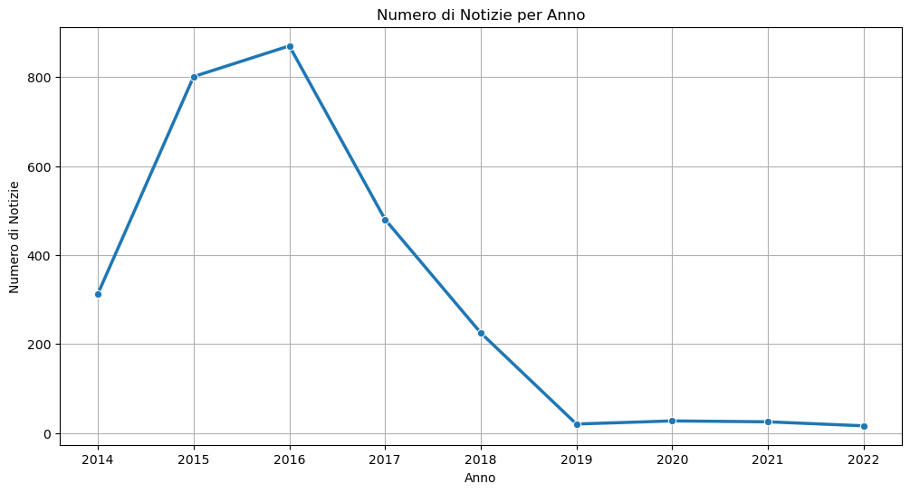

import pandas as pdimport matplotlib.pyplot as pltimport seaborn as snsimport numpy as np# Caricare il CSVdf = pd.read_csv("./sentiment_weird.csv")# Controllare i nomi delle colonneprint("Colonne trovate nel CSV:", df.columns)# Pulire i nomi delle colonne (rimuove eventuali spazi)df.columns = df.columns.str.strip()# Convertire la colonna 'data' in formato datetimedf["Date"] = pd.to_datetime(df["Date"])# Estrarre l'annodf["anno"] = df["Date"].dt.year# Calcolare la media dei sentiment per ogni annodf_grouped = df.groupby("anno")["Sentiment"].mean().reset_index()# Stampare le medie annualiprint("\n📊 Medie annuali dei sentiment:\n", df_grouped)# Creare il graficoplt.figure(figsize=(12, 6))sns.lineplot(x=df_grouped["anno"], y=df_grouped["Sentiment"], marker="o", linewidth=2.5)# Personalizzazione del graficoplt.title("Media Sentiment per Anno")plt.xlabel("Anno")plt.ylabel("Sentiment Medio")plt.ylim(0, 3) # Imposta i limiti dell'asse y da 0 a 3plt.grid(True)plt.show()
# Convertire la colonna 'data' in formato datetimedf["Date"] = pd.to_datetime(df["Date"])# Estrarre l'annodf["anno"] = df["Date"].dt.year# Contare quante notizie ci sono per annonotizie_per_anno = df["anno"].value_counts().sort_index()# Stampare il conteggio delle notizie per annoprint("\n📰 Numero di notizie per anno:\n", notizie_per_anno)
📰 Numero di notizie per anno:
anno
2014 313
2015 801
2016 870
2017 480
2018 225
2019 20
2020 27
2021 25
2022 16
Name: count, dtype: int64
# Convertire la colonna 'data' in formato datetimedf["Date"] = pd.to_datetime(df["Date"])# Estrarre l'annodf["anno"] = df["Date"].dt.year# Contare quante notizie ci sono per annonotizie_per_anno = df["anno"].value_counts().sort_index()# Stampare il conteggio delle notizie per annoprint("\n📰 Numero di notizie per anno:\n", notizie_per_anno)# Creare il graficoplt.figure(figsize=(12, 6))sns.lineplot(x=notizie_per_anno.index, y=notizie_per_anno.values, marker="o", linewidth=2.5)# Personalizzazione del graficoplt.title("Numero di Notizie per Anno")plt.xlabel("Anno")plt.ylabel("Numero di Notizie")plt.grid(True)# Mostrare il graficoplt.show()
📰 Numero di notizie per anno:
anno
2014 313
2015 801
2016 870
2017 480
2018 225
2019 20
2020 27
2021 25
2022 16
Name: count, dtype: int64

# Convertire la colonna 'Date' in datetimedf["Date"] = pd.to_datetime(df["Date"])# Estrarre anno e mesedf["anno"] = df["Date"].dt.yeardf["mese"] = df["Date"].dt.month# Filtrare le notizie tra il 2014 e il 2016df_2014_2016 = df[(df["anno"] >=2014) & (df["anno"] <=2016)]# Contare quante notizie ci sono per ogni annonotizie_per_anno = df_2014_2016["anno"].value_counts().sort_index()# Stampare il risultatoprint("\n📰 Numero di notizie per anno (2014-2016):\n", notizie_per_anno)# Creare tre variabili con i valori come liste di interinotizie_2014 = [notizie_per_anno.get(2014, 0)] # Se non esiste, mettiamo 0notizie_2015 = [notizie_per_anno.get(2015, 0)]notizie_2016 = [notizie_per_anno.get(2016, 0)]# Funzione per assegnare una stagione basata sul mesedef assegna_stagione(mese):if mese in [12, 1, 2]: return"Inverno"elif mese in [3, 4, 5]: return"Primavera"elif mese in [6, 7, 8]: return"Estate"else: return"Autunno"# Aggiungere la colonna "stagione" al dataframedf_2014_2016["stagione"] = df_2014_2016["mese"].apply(assegna_stagione)# Contare le notizie per stagione e annonotizie_per_stagione_anno = df_2014_2016.groupby(["anno", "stagione"]).size().unstack(fill_value=0)# Ordinare le stagionistagioni_ordine = ["Inverno", "Primavera", "Estate", "Autunno"]notizie_per_stagione_anno = notizie_per_stagione_anno.reindex(columns=stagioni_ordine)# Creare i vettori per ogni annonotizie_2014 =list(notizie_per_stagione_anno.loc[2014] if2014in notizie_per_stagione_anno.index else [0, 0, 0, 0])notizie_2015 =list(notizie_per_stagione_anno.loc[2015] if2015in notizie_per_stagione_anno.index else [0, 0, 0, 0])notizie_2016 =list(notizie_per_stagione_anno.loc[2016] if2016in notizie_per_stagione_anno.index else [0, 0, 0, 0])# Stampare i risultatiprint("📅 Notizie 2014 per stagione:", notizie_2014)print("📅 Notizie 2015 per stagione:", notizie_2015)print("📅 Notizie 2016 per stagione:", notizie_2016)# Definire gli anni e le stagionianni = ["2014", "2015", "2016"]stagioni = ["Inverno", "Primavera", "Estate", "Autunno"]# Dati delle notizie per stagione e annodati = np.array([notizie_2014, notizie_2015, notizie_2016])# Definire colori per le stagionicolori = ["#1f77b4", "#ff7f0e", "#2ca02c", "#d62728"]# Posizioni delle barre (una per ogni anno)y_pos = np.arange(len(anni))# Larghezza delle barrebar_height =0.2# Creare il graficofig, ax = plt.subplots(figsize=(10, 6))# Aggiungere le barre per ogni stagionefor i inrange(len(stagioni)): ax.barh(y_pos + i * bar_height, dati[:, i], height=bar_height, label=stagioni[i], color=colori[i])# Etichette sugli assiax.set_yticks(y_pos + bar_height *1.5)ax.set_yticklabels(anni)ax.set_xlabel("Numero di Notizie")ax.set_ylabel("Anno")ax.set_title("Numero di Notizie per Anno e Stagione")# Aggiungere la legendaax.legend(title="Stagioni")# Mostrare il graficoplt.show()
📰 Numero di notizie per anno (2014-2016):
anno
2014 313
2015 801
2016 870
Name: count, dtype: int64
📅 Notizie 2014 per stagione: [29, 54, 118, 112]
📅 Notizie 2015 per stagione: [180, 80, 196, 345]
📅 Notizie 2016 per stagione: [276, 234, 200, 160]
C:\Users\Simone\AppData\Local\Temp\ipykernel_9844\2021541431.py:30: SettingWithCopyWarning:
A value is trying to be set on a copy of a slice from a DataFrame.
Try using .loc[row_indexer,col_indexer] = value instead
See the caveats in the documentation: https://pandas.pydata.org/pandas-docs/stable/user_guide/indexing.html#returning-a-view-versus-a-copy
df_2014_2016["stagione"] = df_2014_2016["mese"].apply(assegna_stagione)